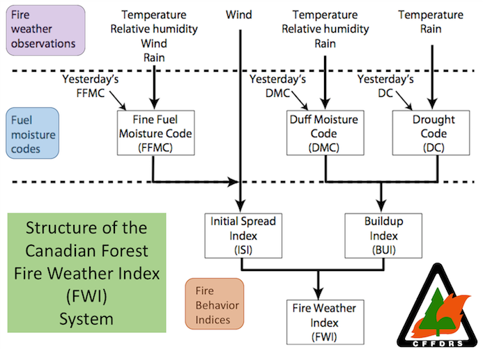
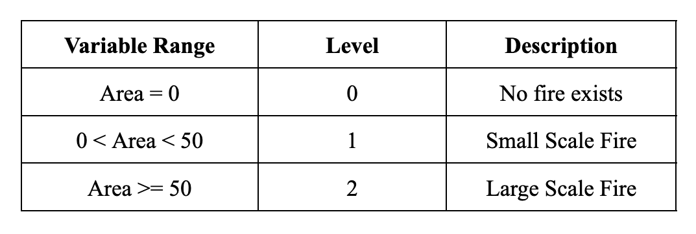

The original dataset has 517 observations and 13 variables collected from January 2000 to December 2003 in Montesinho National Park, Portugal. The target variable is “area”, which is the burned area of the forest in hectares. Input variables include indexes from the Canadian danger rating system of Fire Weather Indexes (FWI) such as FFMC (Fine Fuel Moisture Code Index), DMC (Duff Moisture Code Index), DC (Drought Code Index), and ISI (Initial Spread Index). In addition to these variables, the dataset also includes x and y spatial coordinates within the park map, the month and day of of each observation, temperature, RH (Relative Humidity), wind speed, and outside rain.

For modeling purposes, we first checked if there were missing values in the dataset because further calculations with missing values would be inaccurate and unacceptable. Then, we converted the "month" and "day" variables to be numeric, where 1 represents January for the "month" variable and 1 represents Monday for the "day" variable.
In addition, we noticed that there are 247 observations in the dataset that have a value of 0 for burned area of forest, which could have an effect on our results. Therefore, we switched the variable type of "area" from continuous to discrete. Then, we split the area into different scales, where areas equal to 0 have a level of 0, areas between 0 and 50 have a level of 1, and areas that are 50 or greater have a level of 2.
